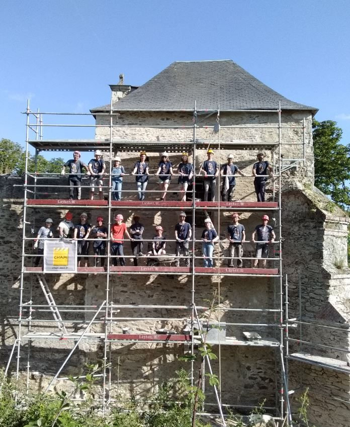

| Caractéristique | Élément de réponse | Justifications |
|---|---|---|
| Nom de l'organisation | C.H.A.M | Signifie Chantiers Histoire et Architecture Médiévales |
| Type d'organisation | Association | |
| But/Finalité | Non-lucrative | |
| Nationalité | Nationalité française | Siège social situé en France, à Paris dans le 14ème arrondissement |
| Champ d'action géographique | Local, régional, national et mondial | Association opérant dans le monde |
| Taille | Petite association | 10 salariés et environ 100 bénévoles par an |
| Type de production | Services culturels, éducatifs et patrimoniaux | Restauration du patrimoine, formations à la restauration, transmission du savoir-faire dans les chantiers-écoles |
| Activités | Production de services | Restauration du patrimoine, formations à la restauration, transmission du savoir-faire |
| Secteur(s) d'activités | Secteur tertiaire : avec leurs services culturels, éducatifs et patrimoniaux | |
| Ressources |
Ressources Humaines : 10 salariés et environ 100 bénévoles par an Ressources Immatérielles : Savoir-faire, méthodes pédagogiques, réputation et reconnaissance Ressources Matérielles : Tout le matériel et les matériaux nécessaires aux différents chantiers, locaux de stockage ainsi que des véhicules Ressources Financières : Subventions publiques, les dons ou encore les frais pédagogiques des chantiers-école |
|
